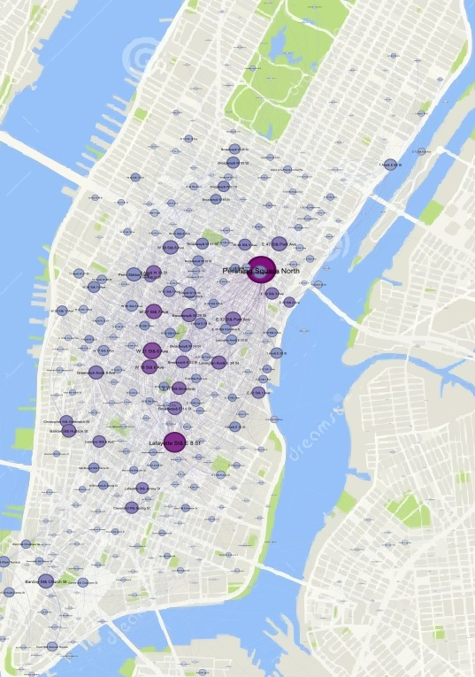

Projet CityBike NYC – Analyse de réseau
Étude des flux de mobilité à New York à partir des données du service CityBike. Analyse Python et visualisation du réseau des stations les plus actives avec Gephi.
Voir le codeProjet Machine Learning – Prédiction de maladies cardiaques
Comparaison de plusieurs modèles d'apprentissage automatique (Régression Logistique, Random Forest, XGBoost, Réseau de Neurones) pour la prédiction de maladies cardiaques à partir de données médicales.
Voir le codeProjet Codage IA
Script Python exploitant l'API Groq pour analyser automatiquement des transcriptions d'entretiens et générer des grilles thématiques sociologiques.
Voir le code Étude de casProjet Deep Reinforcement Learning – CartPole & LunarLander
Implémentation d'algorithmes de Reinforcement Learning (PPO) pour résoudre deux environnements classiques : CartPole-v1 et LunarLander-v3. Utilisation de PyTorch et Gymnasium.
Voir le code Étude de cas